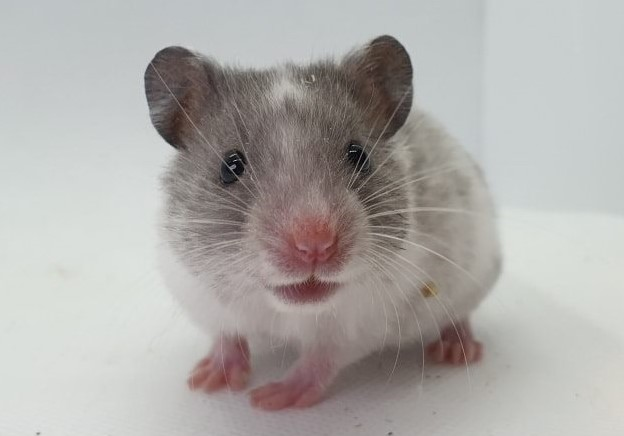
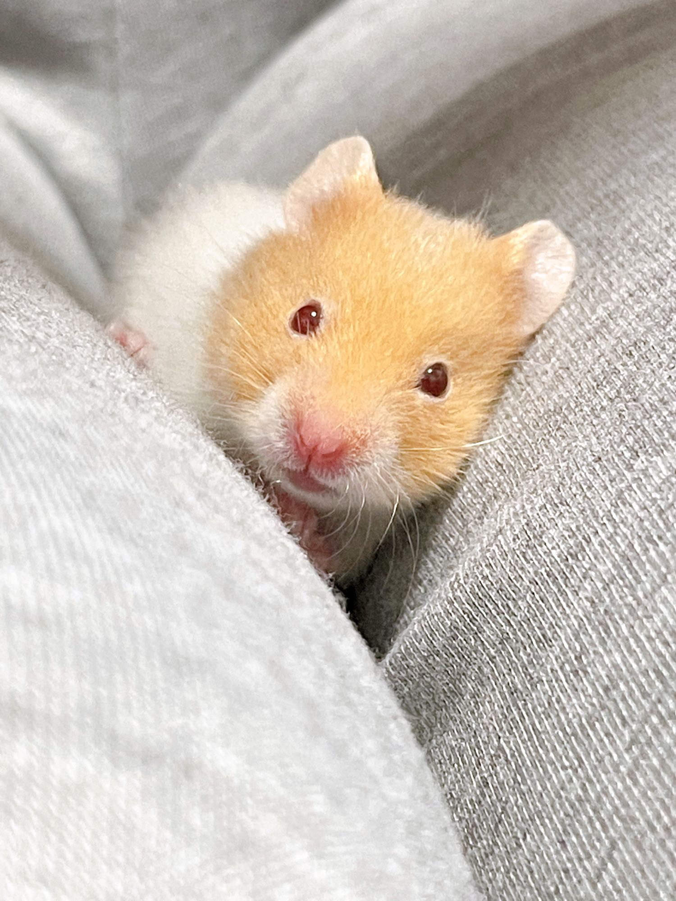
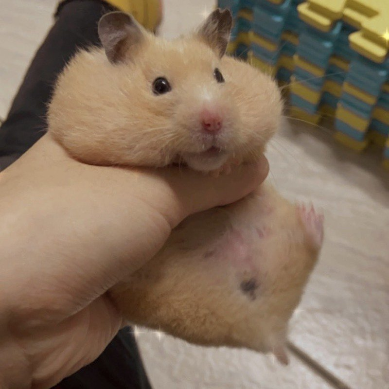
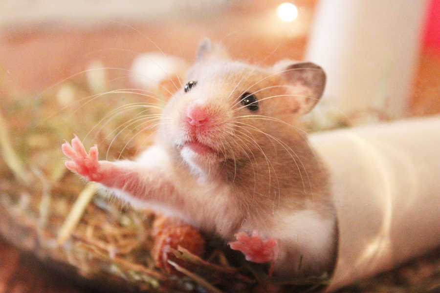

敘利亞倉鼠 (Syrian Hamster)
俗稱：黃金鼠、金絲熊、熊鼠。
身長：約15~20cm
體重：約100~200g
壽命：約2~3年
黃金鼠為最廣為人知的寵物鼠。
主要分布於土耳其南部、到敘利亞北部的乾旱地區。
個性：聰明溫和，最容易和人類親近互動，飼養好上手。但也是最調皮、最需要大空間的品種。常常能看見主人們在網路上分享他們的逗趣模樣。
習性：領域性極強，為獨居動物，不應將兩隻以上黃金鼠養在同一個籠子裡。建議單獨飼養。
